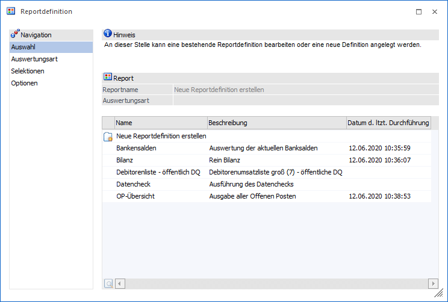
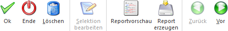

Im Menüpunkt "Reportdefinition", welcher über
1 WinLine START
1 Action Server
1 Reportdefinition
aufgerufen werden kann, können Reportdefinitionen erstellt werden, welche in weiterer Folge mittels Action Server ausgewertet werden können.
Hinweis
Reportdefinitionen sind mandantenunabhängige Daten!
Achtung
Für die Ausgabe der Reports wird eine "Action Server"-Lizenz benötigt.

Bei der Reportdefinition handelt es sich um einen Assistenten der durch die einzelnen Schritte zur Erstellung eines Reports führt. Die Navigation kann hierbei über die Buttons "Zurück" und "Vor" oder über den linken Navigationsbereich erfolgen. Die einzelnen Schritte lauten wie folgt und werden in den nachfolgenden Kapiteln beschrieben:
ü Bereich "Auswahl"
In diesem Bereich
werden die bereits angelegten Reports dargestellt.
ü Bereich "Auswertungsart"
In diesem
Bereich kann die Art der Auswertung (d.h. des Reports) angegeben werden.
ü Bereich "Selektionen"
In diesem
Bereich erfolgt die Selektion für die Auswertungen.
ü Bereich "Optionen"
In diesem
Bereich wird u.a. der Name des Reports hinterlegt und definiert, in welcher
Ausgabeart der Report erzeugt werden soll.
Achtung
Ein Report kann immer nur von einem Benutzer bearbeitet bzw. genutzt werden! D.h. wenn ein Report gerade von einem Benutzer bearbeitet wird, so kann gleichzeitig für diesen Report keine Ausgabe im Action Server erfolgen.
Buttons

Ø Ok
Durch Anwahl des Buttons "Ok" bzw. der Taste F5 wird die Reportdefinition gespeichert.
Hinweis
Handelt es sich um einen Report mit der Ausgabeart "3 - Datenquelle (öffentlich)" so kann dieser nur von Benutzern des Typs "Administrator" oder mit der Administratorenberechtigung "Datenadministrator" editiert werden.
Ø Ende
Durch Anklicken des Buttons "Ende" bzw. der Taste ESC wird das Fenster geschlossen und alle nicht gespeicherten Informationen verworfen.
Ø Löschen
Mit dem Button "Löschen" kann die markierte Reportdefinition gelöscht werden.
Hinweis
Handelt es sich um einen Report mit der Ausgabeart "3 - Datenquelle (öffentlich)" so kann dieser nur von Benutzern des Typs "Administrator" oder mit der Administratorenberechtigung "Datenadministrator" gelöscht werden.
Ø Selektion bearbeiten
Über den Button "Selektion", welcher nur im Bereich "Selektionen" zur Verfügung steht, wird das Selektionsfenster der jeweiligen Reportdefinition geöffnet.
Ø Reportvorschau
Durch Anwählen des Buttons "Reportvorschau" wird die Auswertung mit den eingegebenen Selektionen aufgerufen und das Ergebnis angezeigt.
Hinweis
Handelt es sich um einen Report mit der Ausgabeart "2 - Datenquelle (privat)" oder "3 - Datenquelle (öffentlich)" so steht der Button nicht zur Verfügung.
Ø Report erzeugen
Durch Drücken des Buttons "Report erzeugen" wird die Auswertung mit den eingegebenen Selektionen aufgerufen und das Ergebnis im Archiv oder der BI-Datenbank gespeichert (je nach Ausgabeart).
Hinweis 1
Wurde bereits einmal eine Ausgabe ins Archiv durchgeführt, so wird in der Tabelle des Bereichs "Auswahl" das Datum der letzten Durchführung angezeigt. In diesem Fall kann die Auswertung (=Archiveintrag) aufgerufen und angezeigt werden.
Handelt es sich hingegen um eine Reportdefinition mit Ausgabeart "Datenquelle (xxx)", so können die Daten mit Hilfe des Programms "Datenquellenverwaltung" ausgewertet werden.
Hinweis 2
Handelt es sich um einen Report mit der Ausgabeart "3 - Datenquelle (öffentlich)" so kann dieser nur von Benutzern des Typs "Administrator" oder mit der Administratorenberechtigung "Datenadministrator" erzeugt werden.
Ø Zurück / Vor
Mit Hilfe der Buttons "Vor" und "Zurück" kann zwischen den unterschiedlichen Bereichen der Reportdefinition gewechselt werden.
Hinweis 1
Eine Navigation ist auch über den linken Navigationsbereich möglich.
Hinweis 2
Handelt es sich um einen Report mit der Ausgabeart "3 - Datenquelle (öffentlich)" so kann dieser nur von Benutzern des Typs "Administrator" oder mit der Administratorenberechtigung "Datenadministrator" editiert werden.